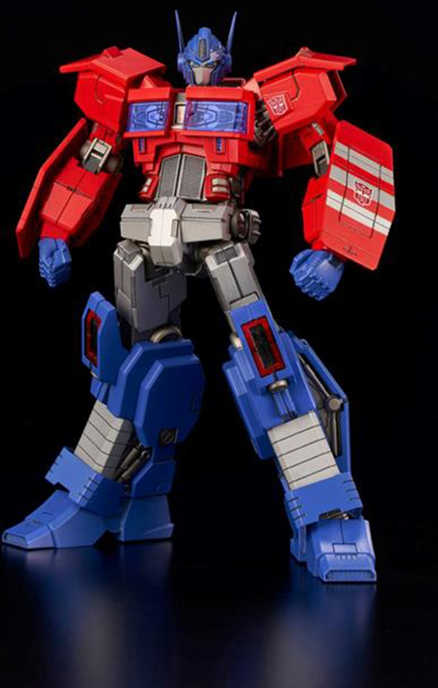
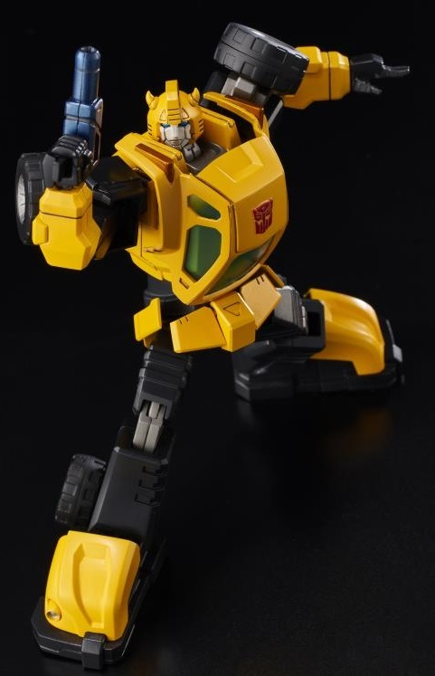
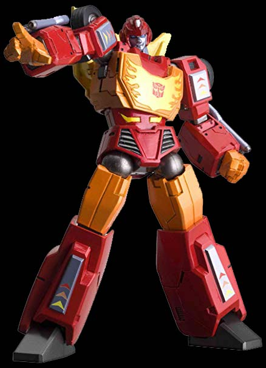

Later, hard times follow, with the Autobots becoming a corrupt galactic police force. While shutting down an Energon-mining operation, they incite a riot by beating an outspoken miner to death. The riot is extinguished, resulting in the miners either dead or imprisoned. A surviving miner, Megatron, manages to take over a prison shuttle and hide it in Kaon, the seediest city on Cybertron. Megatron makes a name for himself in the underground gladiatorial matches, learning to enjoy the kill. He recruits the Seekers, Soundwave, and the future Cassetticons to perform acts of terrorism throughout Cybertron. Megatron rallies a large group of gladiators and proposes for them to unite under the same badge, but they are caught and arrested by Sentinel Prime's police force. However, this is part of Megatron's plan, as Starscream kills the Autobot Senate. Megatron kills Sentinel Prime, and the newly forged Decepticons take over the city-state of Kaon, heralding the beginning of the war. The populace at large is distracted by mass sports race games, with racers like the arrogant but talented Blurr becoming celebrities. Early on during the war, both Autobot and Decepticon try to recruit Blurr to their cause, with a young Optimus talking Blurr into saving the life of Zeta Prime from Starscream's assassination squad. A rookie Tracks is saved from the elite Predacons by special ops soldier Jazz. In later years, Tracks passes on the story of the lone Autobot to boost morale in times of crisis.
Around this time, a third group of Cybertronians form who are opposed to the war and both sides of it. They leave Cybertron and are never seen again. The war eventually devastates the planet, and a Decepticon scientist named Thunderwing suggests to graft Transformers with protective organic shells, which Megatron rejects. Thunderwing experiments on himself, becoming a beast who devastates Cybertron. The Decepticons recover more quickly and stage a new offensive against the Autobots, who suffer the loss of the charismatic Blaster, the voice of the Autobot resistance: he is shot and set adrift in space by a traitor.
With their home world dead, the Transformers continue their war on other planets.The Decepticons escalate tensions on planets by replacing important people with loyal clones called facsimiles, allowing the worlds to destroy themselves before they move in for the energy resources, and send Sixshot to finish off the planets. Nonetheless, the two sides agree to the Tyrest Accord, in which they will not supply weapons to less advanced cultures. Scorponok violates this treaty on Nebulos, creating "transformable men" with the help of Mo Zarak's corporation, but an attack by Ultra Magnus forces him to flee. Badly damaged with only his severed head remaining, he arrives on Earth at some point and establishes the Machination, an organization dedicated to acquiring Transformer technology for their own ends.
|  | optimus prime |
|  | bumblebee |
|  | hot rod |